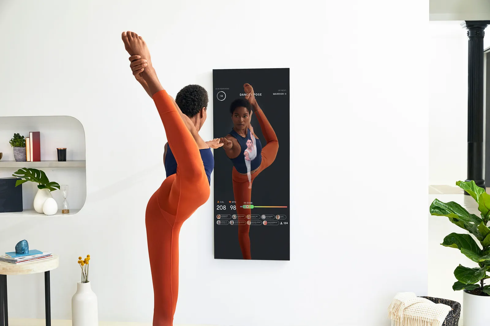

<div class="textcontainer">
<br></br>
<p class = "margin"></p>
<h3 class="project-intro">Here are at most 3 ideas for my final project:</h3>
<p class = "margin"></p>
<h4><b>First Idea:</b> Water bottle cleaner and status checker!</h4>
<p class = "margin"></p>
I'm really good at drinking water when my water bottle is clean. However,
after a certain point I start to get suspicious that there's bacteria inside and a avoid it like the plague. I'm hoping to make a tool that can test the inside of my water bottle to see just how dirty it is! And if it's too dirty it can run a cleaning cycle.
<p class = "margin"></p>
<h4><b>Second Idea:</b> Friendly message keychain!</h4>
<p class = "margin"></p>
I'm a great friend but not so great at replying to texts! and i'm lucky to have friends that are equally horrible at texting. My idea is to make a keychain that my friends and i can carry around that can display our thoughtful one sentence messages, that you can enter using an app. (ex. miss you guys <3; have a great day :); look at the moon!) ideally, you would be able to send and reply to messages with preset buttons on the keychain. I would love to explore with the shape of the keychain... currently thinking of crocheting a small stuffed animal.
<p class = "margin"></p>
<h4><b>Third Idea:</b> Handwritten Letter Machine </h4>
<p class = "margin"></p>
Nothing beats the feeling of receiving a handwritten letter in the mail or just in general! But some of us (me) have horrible handwriting and therefore take forever to write things that other people are meant to read. On top of that, who has the time?? My idea is a robot that can hold a pen and then write notes for you in real time as you write your message out using voice typing. My hope is to make the handwriting look as authentic as possible by using AI. (as opposed to premade 'handwriting' fonts that don't mimic the variability of real handwriting). This could also be used as a tool to aid people with cognitive or physical disabilities for note taking during class.
<p class = "margin"></p>
<iframe src="https://assets.pinterest.com/ext/embed.html?id=707698528991340056" height="438" width="450" frameborder="0" scrolling="no" ></iframe>
<p class = "margin"></p>
<h4><b>Bonus Idea:</b> Smart Fashion mirror </h4>
<p class = "margin"></p>
Something that takes me forever is getting dressed before going out of the house! My idea is based off of the new(ish) fitness invention called MIRROR (image below). I would take this idea and apply it to my passion for fashion by making the mirror able to take a picture/screenshot of your current outfit and move it to a folder of past outfits. This serves as a way to document your outfits AND display them infront of you life-sized.

</div>